ASN RHIZO-NETWORK

“We believe that artistic exploration can and should raise awareness about the challenges of the 21st
century as well as about the importance and impact of the scientific research, for the better
understanding and well-being of the world and its inhabitants.”

Art & Science Node (ASN) is a creative & innovative network aiming at and committed to the
creation of
the synergy between art, science and technology. It provides a platform to bring people of diverse
backgrounds together in order to explore and generate new ideas and alternative perspectives on science
and culture. ASN develops and supports transdisciplinary projects, international exhibitions, discussion
panels as well as "artists in laboratories" residence programs and interdisciplinary workshops. ASN
team, members and partners are professionals – theorists and practitioners from multiple organizations
and institutions found all over the world. As we understand the public engagement and education to be
one of the most important challenges for the art and science communities, we develop innovative
communication strategies for the benefit of the society of knowledge.
Homepage